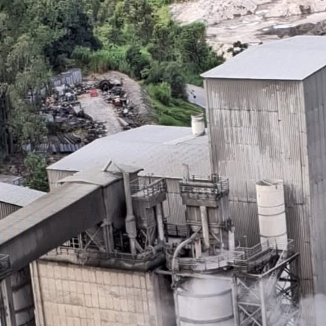
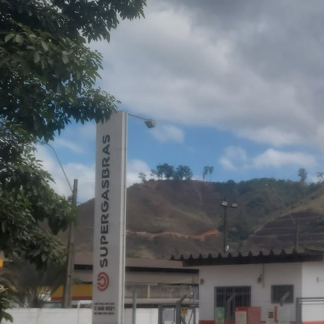
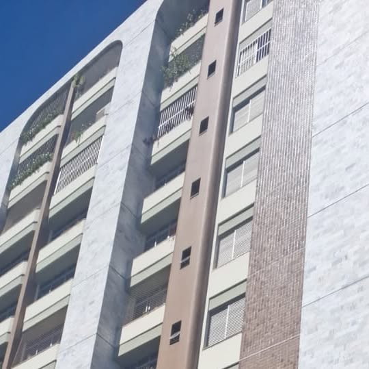

Indústria
SPDA em ambientes industriais: o que um bom diagnóstico precisa enxergar
Campo, documentos, aterramento e prioridades precisam conversar para que o laudo ajude a operação.
Ler o artigoInformação prática para quem precisa entender uma instalação, corrigir pendências, planejar uma obra ou tomar uma decisão com mais segurança.
Encontre respostas sobre SPDA, aterramento, NR-10, estudos elétricos e viabilidade para indústria, energia, condomínios, infraestrutura e instalações comerciais.

Campo, documentos, aterramento e prioridades precisam conversar para que o laudo ajude a operação.
Ler o artigoO diagnóstico ganha valor quando ajuda a definir prioridades, orçamento e próximo passo.
Ler o artigo
Instalações extensas exigem objetividade, rastreabilidade e integração entre campo e engenharia.
Ler o artigo
Novas cargas exigem planejamento, segurança e uma leitura realista da infraestrutura disponível.
Ler o artigoA segurança elétrica precisa de informação organizada, responsabilidades e registros compatíveis com a operação.
Ler o artigoDiagnóstico, projeto, adequação e certificação podem formar uma história técnica acompanhável.
Ler o artigoEm uma instalação industrial, o SPDA não pode ser analisado como um conjunto isolado de cabos, captores e descidas. O diagnóstico precisa considerar a arquitetura, as estruturas metálicas, as áreas ocupadas, o aterramento, as ampliações, os documentos existentes e a forma como a instalação realmente opera.
Por isso, a WX2 combina inspeção visual, leitura de documentação, registros fotográficos e, quando o escopo técnico exige, medições de continuidade, resistência do aterramento ou resistividade do solo. A pergunta principal não é apenas “qual foi o valor medido?”, mas “o que esse resultado significa para esta instalação e para a decisão que precisa ser tomada?”.
Descrição clara do sistema encontrado, registro dos pontos avaliados, separação entre condição observada e recomendação, priorização do que precisa ser corrigido e documentação útil para manutenção, segurança e gestão.
Um laudo é mais útil quando ajuda o cliente a entender o problema e decidir o que fazer. A conclusão deve mostrar as pendências, indicar prioridades e separar o que pode ser resolvido com manutenção do que exige projeto ou adequação.
Em uma instalação complexa, o cliente deve conseguir localizar o problema, entender sua importância e visualizar o próximo passo — seja uma medição, uma atualização de projeto, uma contratação ou uma obra. Esse é o papel da engenharia: transformar informação técnica em decisão segura.
Ambientes de mineração e obras industriais concentram estruturas extensas, frentes de trabalho, alterações de layout, equipamentos de grande porte e diferentes equipes atuando ao mesmo tempo. Nesses contextos, a documentação precisa ser direta, rastreável e útil para quem vai decidir ou executar.
Referências como Milplan/Anglo American, Air Products, Bunge, Cimento Tupi, Grupo Unimetal e Cobra/UTE Marlim Azul mostram por que a inspeção de campo precisa conversar com desenhos, memoriais, registros fotográficos e condições de implantação.
O síndico normalmente precisa responder a três perguntas: o sistema existe? Está em condições adequadas? O que precisa ser feito e como priorizar o investimento? Um laudo deve ajudar a responder com linguagem compreensível e base técnica.
Inspeção verifica e registra condições. Laudo consolida a análise. Projeto define uma solução. Adequação corrige o sistema conforme o escopo contratado. Dependendo do caso, o condomínio pode precisar de uma ou mais dessas etapas.
A NR-10 trata da segurança em instalações e serviços em eletricidade. Na prática, isso significa organizar informações, responsabilidades, procedimentos, registros e condições de trabalho para que a segurança não dependa apenas da experiência individual.
Um diagnóstico pode envolver levantamento da instalação, identificação de documentos, verificação de pendências, análise de prontuário e plano de adequação. O conteúdo precisa ser compatível com o porte, a operação e os riscos reais do cliente.
Edificações simbólicas e de grande circulação exigem mais do que uma conclusão genérica. O diagnóstico precisa ser convertido em documentação que ajude a projetar, executar e verificar a solução, respeitando a realidade do prédio.
No Edifício Acaiaca, a documentação do projeto reúne laudo, gerenciamento de risco, projeto de SPDA, desenhos, ART de obra e laudo final de certificação. Essa sequência mostra como a engenharia transforma um diagnóstico em uma intervenção acompanhável.
Quando um condomínio avalia ar-condicionado, carregadores para veículos elétricos ou outras novas cargas, a primeira pergunta é se a infraestrutura existente comporta a mudança e quais premissas precisam ser verificadas.
O estudo organiza cargas previstas, cenários, capacidade instalada e limitações conhecidas. Padrões lacrados, a norma técnica aplicável e a variação futura das unidades podem justificar a análise sem determinada medição adicional, desde que o critério seja registrado no estudo.
Uma inspeção pontual ajuda a conhecer o estado da instalação naquele momento. A inspeção recorrente permite comparar períodos, acompanhar correções, registrar alterações e identificar tendências antes que um problema se torne uma emergência.
O histórico de trabalhos em usinas, hotéis e outras instalações mostra que o valor não está em repetir o mesmo texto, mas em comparar o que mudou, o que foi corrigido e o que ainda precisa ser tratado.
A inspeção é a atividade de verificar e registrar a instalação. O laudo consolida o escopo, os resultados, as conclusões e as recomendações técnicas.
Depende da condição da instalação, da documentação disponível e da solução necessária. O laudo ou diagnóstico ajuda a definir se é preciso projetar ou atualizar um projeto existente.
Não. O resultado precisa ser interpretado junto com continuidade, captação, descidas, conexões, equipotencialização, documentação e condições observadas.
Quando o diagnóstico identifica pendências que exigem correção física, complementação, substituição ou execução conforme um projeto.
Sim. Uma boa conclusão separa pendências, riscos, recomendações e próximos passos para apoiar orçamento e planejamento.
É a norma regulamentadora que trata da segurança em instalações e serviços em eletricidade, incluindo organização, responsabilidades, procedimentos e documentação.
É o levantamento das condições da instalação, dos documentos, das responsabilidades e das práticas de segurança, com indicação das adequações necessárias.
Não. A viabilidade apoia uma decisão inicial. O projeto executivo detalha a solução para execução.
Porque unidades podem alterar equipamentos, hábitos e cargas. O cenário futuro deve ser tratado por premissas e projeções documentadas.
Nem sempre. O lacre da concessionária limita o acesso e não deve ser rompido para obter uma medição sem autorização e procedimento adequado.
Não necessariamente. O estudo deve seguir a norma técnica aplicável e registrar quando a definição pode ser feita por premissas e dados disponíveis.
Indústria, energia, mineração, telecomunicações, hospitais, hotéis, edifícios comerciais, condomínios e outras instalações elétricas.
Sim. Há experiência documentada em mineração pesada, frentes industriais, aterramento, SPDA, estudos elétricos e NR-10.
Quando a instalação é crítica ou sofre mudanças, a recorrência cria histórico e permite acompanhar correções e novas condições.
Pode, desde que as limitações de acesso sejam registradas e a conclusão deixe claro o alcance da avaliação.
Escopo, registros de campo, documentação consultada, resultados, imagens, não conformidades, recomendações e critérios de priorização.
O próximo passo pode ser manutenção, medição complementar, atualização de projeto, desenvolvimento de uma solução ou adequação da instalação.
Sim, quando o objetivo e o método estiverem definidos. A medição deve ser acompanhada de condições de campo e interpretação compatível com o escopo.
Envie o tipo de instalação, endereço, objetivo, documentos existentes e principais dúvidas. A WX2 orientará o melhor caminho.
Clareza. O cliente precisa entender o problema, a prioridade, a solução possível e o próximo passo de contratação.
O blog ajuda a entender o caminho. A avaliação técnica ajuda a definir o que fazer no seu caso.